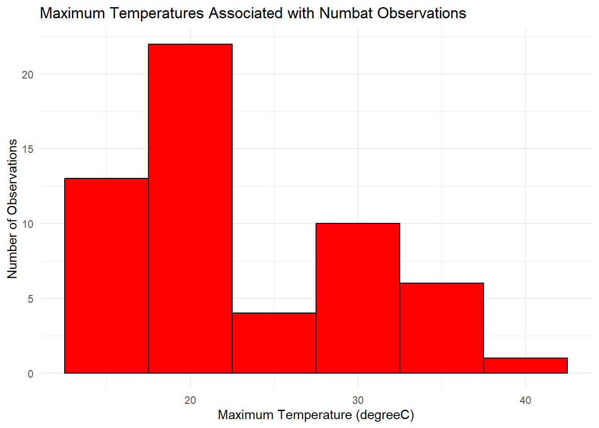
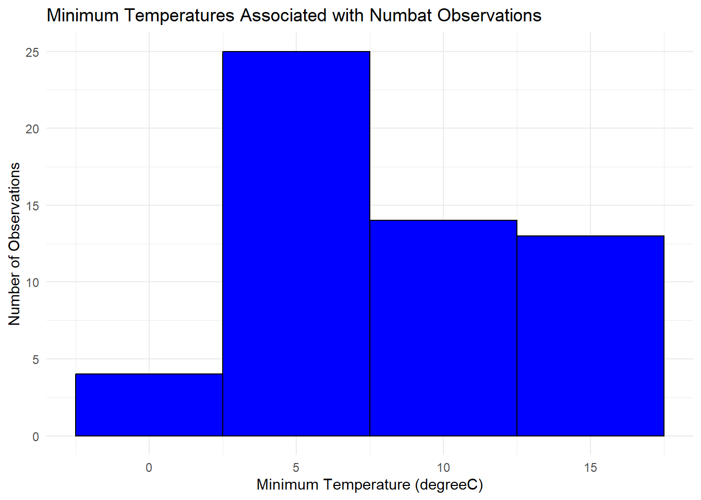
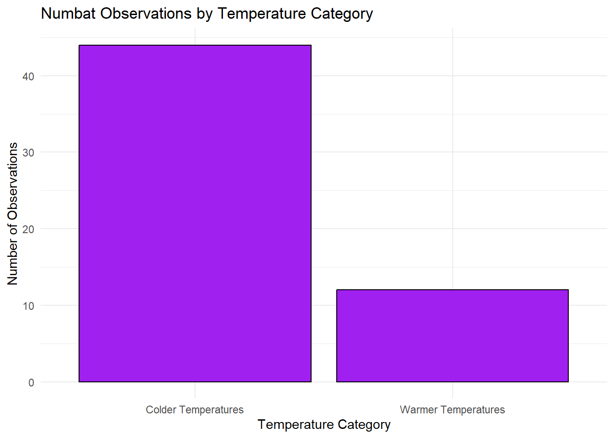
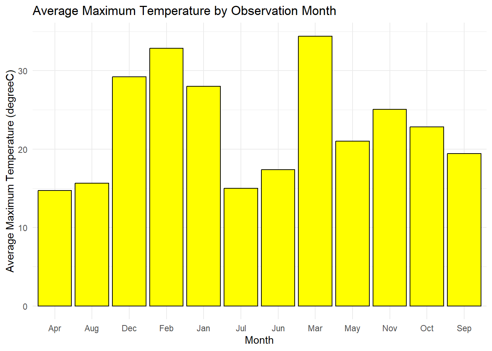

#because why not:
print("hello numbats in Australia!")[1] "hello numbats in Australia!"#because why not:
print("hello numbats in Australia!")[1] "hello numbats in Australia!"#Loading my packages and data:
library(tidyverse)── Attaching core tidyverse packages ──────────────────────── tidyverse 2.0.0 ──
✔ dplyr 1.2.1 ✔ readr 2.2.0
✔ forcats 1.0.1 ✔ stringr 1.6.0
✔ ggplot2 4.0.3 ✔ tibble 3.3.1
✔ lubridate 1.9.5 ✔ tidyr 1.3.2
✔ purrr 1.2.2
── Conflicts ────────────────────────────────────────── tidyverse_conflicts() ──
✖ dplyr::filter() masks stats::filter()
✖ dplyr::lag() masks stats::lag()
ℹ Use the conflicted package (<http://conflicted.r-lib.org/>) to force all conflicts to become errorsnumbats_data<-read.csv("data/numbats.csv")
summary(numbats_data) decimalLatitude decimalLongitude eventDate scientificName
Min. :-37.65 Min. :115.7 Length :805 Length :805
1st Qu.:-34.51 1st Qu.:117.3 N.unique :266 N.unique : 2
Median :-33.21 Median :139.4 N.blank : 0 N.blank : 0
Mean :-33.37 Mean :132.6 Min.nchar: 20 Min.nchar: 21
3rd Qu.:-32.90 3rd Qu.:141.1 Max.nchar: 20 Max.nchar: 27
Max. :-23.33 Max. :150.3 NAs :253
NAs :83 NAs :83
taxonConceptID recordID dataResourceName year
Length :805 Length :805 Length :805 Min. :1856
N.unique : 2 N.unique :805 N.unique : 18 1st Qu.:2013
N.blank : 0 N.blank : 0 N.blank : 0 Median :2016
Min.nchar: 73 Min.nchar: 36 Min.nchar: 16 Mean :2014
Max.nchar: 73 Max.nchar: 36 Max.nchar: 60 3rd Qu.:2019
Max. :2023
NAs :253
month wday hour day
Length :805 Length :805 Min. : 0.00 Length :805
N.unique : 12 N.unique : 7 1st Qu.:13.00 N.unique :257
N.blank : 0 N.blank : 0 Median :13.00 N.blank : 0
Min.nchar: 3 Min.nchar: 3 Mean :12.42 Min.nchar: 10
Max.nchar: 3 Max.nchar: 3 3rd Qu.:13.00 Max.nchar: 10
NAs :253 NAs :253 Max. :22.00 NAs :253
NAs :253
dryandra prcp tmax tmin
Mode :logical Min. : 0.0000 Min. :13.70 Min. : 0.900
FALSE:597 1st Qu.: 0.0000 1st Qu.:17.90 1st Qu.: 4.400
TRUE :125 Median : 0.0000 Median :21.50 Median : 6.300
NAs :83 Mean : 0.5593 Mean :22.98 Mean : 8.323
3rd Qu.: 0.4000 3rd Qu.:29.30 3rd Qu.:12.100
Max. :11.4000 Max. :39.50 Max. :17.500
NAs :746 NAs :748 NAs :748 head(numbats_data) decimalLatitude decimalLongitude eventDate scientificName
1 -37.65000 145.5333 <NA> Myrmecobius fasciatus
2 -35.10341 150.2570 2014-06-05T02:00:00Z Myrmecobius fasciatus
3 -35.00000 117.5000 <NA> Myrmecobius fasciatus
4 -34.70000 117.8000 <NA> Myrmecobius fasciatus
5 -34.60000 117.3000 <NA> Myrmecobius fasciatus
6 -34.60000 117.3000 <NA> Myrmecobius fasciatus
taxonConceptID
1 https://biodiversity.org.au/afd/taxa/6c72d199-f0f1-44d3-8197-224a2f7cff5f
2 https://biodiversity.org.au/afd/taxa/6c72d199-f0f1-44d3-8197-224a2f7cff5f
3 https://biodiversity.org.au/afd/taxa/6c72d199-f0f1-44d3-8197-224a2f7cff5f
4 https://biodiversity.org.au/afd/taxa/6c72d199-f0f1-44d3-8197-224a2f7cff5f
5 https://biodiversity.org.au/afd/taxa/6c72d199-f0f1-44d3-8197-224a2f7cff5f
6 https://biodiversity.org.au/afd/taxa/6c72d199-f0f1-44d3-8197-224a2f7cff5f
recordID
1 73830609-3d94-461f-a833-01c0a30c5a0d
2 13287c0e-034d-4f05-908b-d3b60c90813d
3 1041c2af-7e1f-4344-b79c-9c04aa3a55b5
4 c9804b7a-de92-42db-8912-632dc37baa38
5 bc0c873a-6a10-4035-9589-a0270622b293
6 2b917c66-27a3-4aaa-a807-3b364fd67ef4
dataResourceName year month wday hour
1 Queen Victoria Museum Art Gallery provider for OZCAM NA <NA> <NA> NA
2 ALA species sightings and OzAtlas 2014 Jun Thu 2
3 Western Australian Museum provider for OZCAM NA <NA> <NA> NA
4 Western Australian Museum provider for OZCAM NA <NA> <NA> NA
5 Western Australian Museum provider for OZCAM NA <NA> <NA> NA
6 Western Australian Museum provider for OZCAM NA <NA> <NA> NA
day dryandra prcp tmax tmin
1 <NA> FALSE NA NA NA
2 2014-06-05 FALSE NA NA NA
3 <NA> FALSE NA NA NA
4 <NA> FALSE NA NA NA
5 <NA> FALSE NA NA NA
6 <NA> FALSE NA NA NA#Filtering out the temp obs with NAs there
numbats_temp_filtered<- numbats_data %>%
filter(!is.na(tmax), !is.na(tmin))
#NOTE: when the data is filtered, there are 56 entries (the ones that aren't NA)
#Counting the obs w/ the given temp data
nrow(numbats_temp_filtered)[1] 56#Calculateing some stats to help answer my question:
numbats_temp_summary<- numbats_temp_filtered %>%
summarise(
avg_max = mean(tmax),
avg_min = mean(tmin),
max_temp = max(tmax),
min_temp = min(tmin))
head(numbats_temp_summary) avg_max avg_min max_temp min_temp
1 23.02679 8.335714 39.5 0.9#Making a histogram of max % min temps
ggplot(numbats_temp_filtered, aes(x = tmax)) +
geom_histogram(binwidth = 5,fill = "red", color = "black") +
labs(title = "Maximum Temperatures Associated with Numbat Observations",
x = "Maximum Temperature (degreeC)",
y = "Number of Observations") +
theme_minimal()
ggplot(numbats_temp_filtered, aes(x = tmin)) +
geom_histogram(binwidth = 5,fill = "blue",color = "black") +
labs(title = "Minimum Temperatures Associated with Numbat Observations",
x = "Minimum Temperature (degreeC)",
y = "Number of Observations") +
theme_minimal()
#I want to divide the numbat obs into categories of temperatures, so then I can do 3 month intervals (seasons of warmer and colder months)
#Colder: below 20 degree C (68 degree F)
colder_temps<- numbats_temp_filtered %>%
filter(tmax < 30)
#Warmer: 30 degree C and above (86 dgeree % or higher)
warmer_temps<- numbats_temp_filtered %>%
filter(tmax >= 30)
#NOTE: 44 obs are in the "colder" category, and 12 obs are in the warmer category.
#I can see the count in the data frames but for "just because" sake...
nrow(colder_temps)[1] 44nrow(warmer_temps)[1] 12#Could I make a table comparing the temp categories I made?
temp_counts_compare<- data.frame(
temperature = c("Colder Temperatures", "Warmer Temperatures"),
observations = c(nrow(colder_temps), nrow(warmer_temps)))
#^Well that was anticlimatic and I don't know what cool table I was expecting... so let's see if a bar graph looks cooler!
ggplot(temp_counts_compare, aes(x = temperature, y = observations)) +
geom_col(fill = "purple", color = "black") +
labs(title = "Numbat Observations by Temperature Category",
x = "Temperature Category",
y = "Number of Observations") +
theme_minimal()
#Let me calculate the verage temperatures by month with the 56 obs that I have...
monthly_temps <- numbats_temp_filtered %>%
group_by(month) %>%
summarise(
observations = n(),
avg_tmax = mean(tmax),
avg_tmin = mean(tmin))
#Graphing average maximum temperature by months
ggplot(monthly_temps, aes(x = month, y = avg_tmax)) + geom_col(fill = "yellow", color = "black") +
labs(title = "Average Maximum Temperature by Observation Month",
x = "Month",
y = "Average Maximum Temperature (degreeC)") +
theme_minimal()
#NOTE: the months are automatically put in alphabetical order, I think "groupby()" does that?